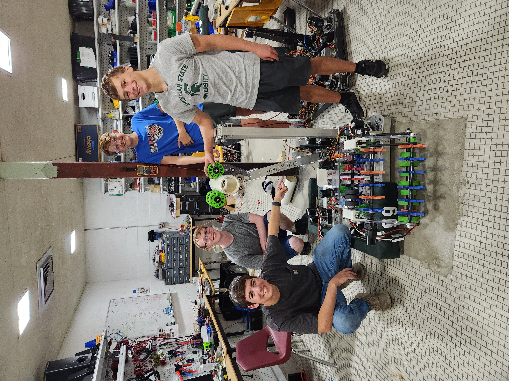
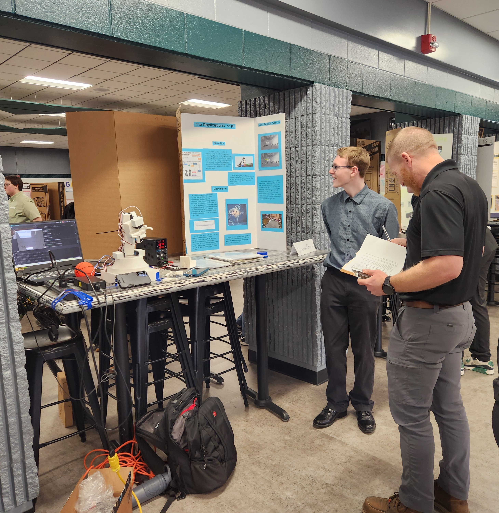
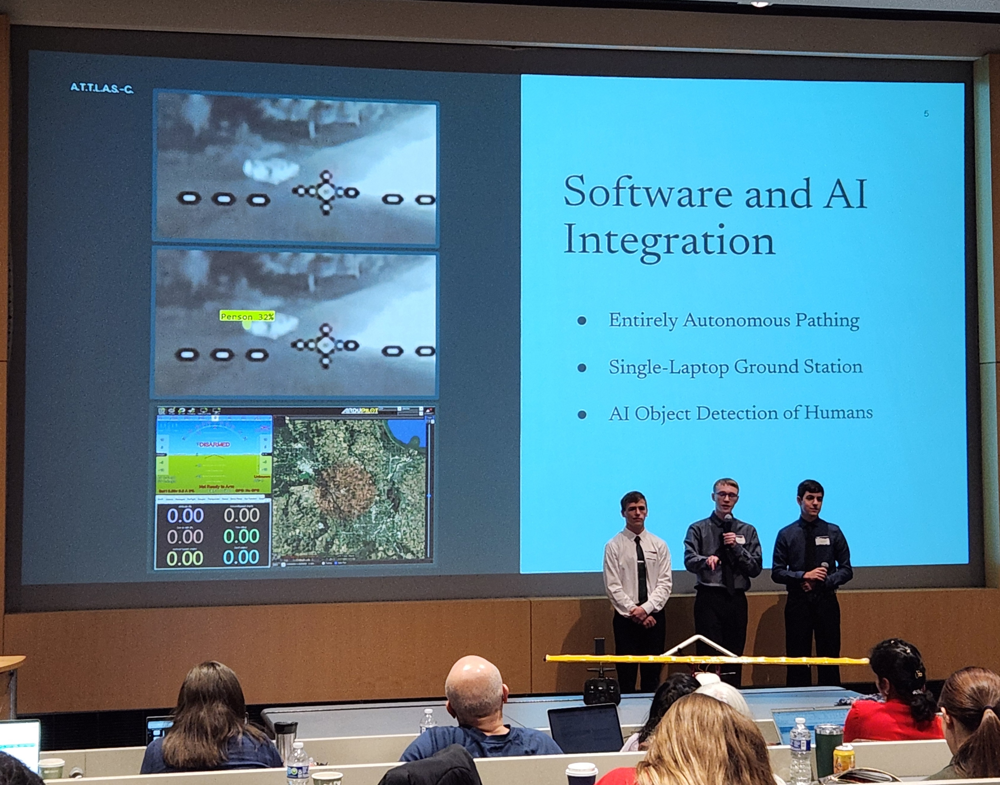
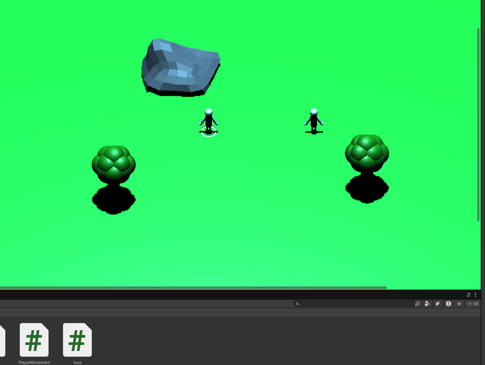
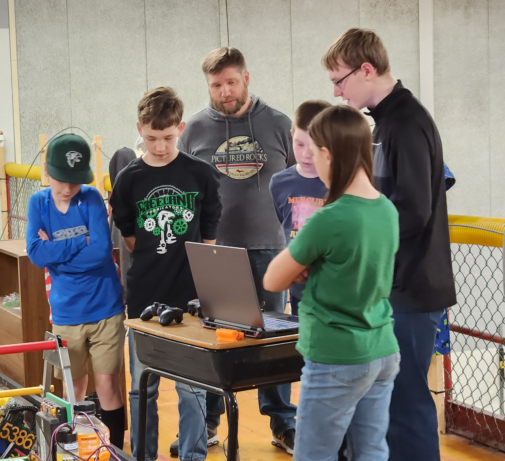
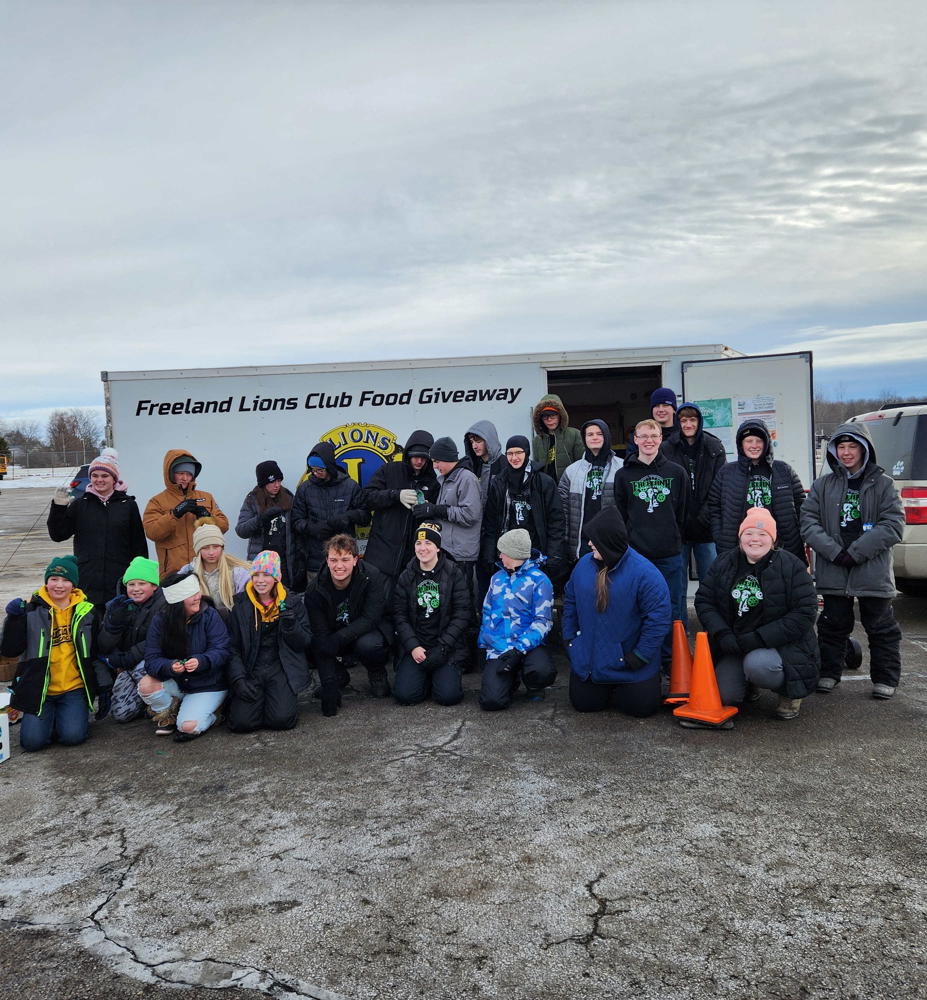
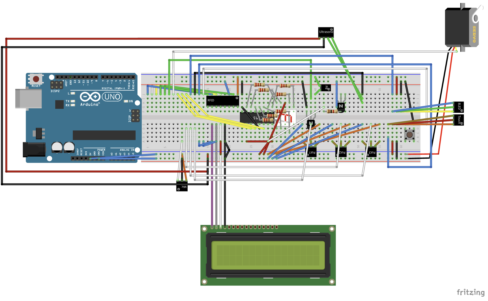
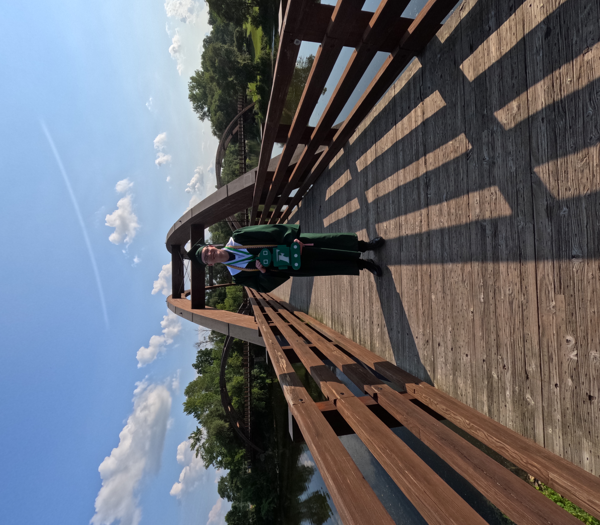
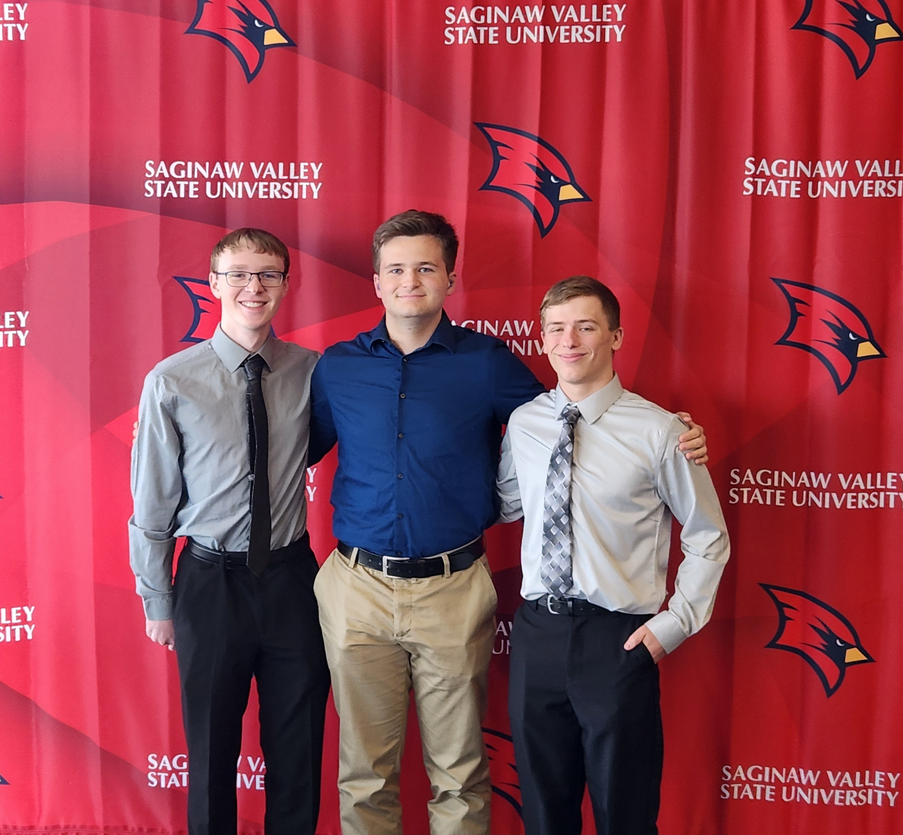

Working in Python, Java, Javascript, HTML, CSS, C#
Built a computer for personal use
Working with and researching AI (YOLO Models, Deep Reinforcement Learning, etc.)
Experienced with 3-D printers and 3-D modelling
Robotics and other integrated systems
Projects

As a high school student I was a member of FRC Team 5166, the Freeland Fabricators. As a Fabricator, I have to help not only create a robot every year to accomplish the year's game, but also help our community, make STEM more accessible, and ensure the sustainability of our club. Through my time on the team I put in countless hours learning STEM skills, especially with programming in python and working with robotics systems. In my final two years, I was a team captain, the lead programmer, and the driver for the team.

For my senior capstone project, I decided to work on implementing and showcasing AI. For the written portion, I researched and looked into the benefits and drawbacks of AI as it constantly is being implemented into our world. For the project portion, I created a small, 3-D printed robotic arm that used AI object detection in order to interact with its surroundings. It utilized an Arduino as well as a Python script in order to achieve its core functionalities.

For my Advanced Engineering capstone project, I worked alongside two of my peers in order to create a search and rescue Unmanned Aerial Vehicle (UAV) prototype. The goal was to create a simple, easy to deploy, and cheap UAV that would use a camera along with an object detection pipeline in order to find lost individuals.

Another project that I have worked on is developing a game within Unity. This process has involved 3-D modelling, image editing, music creation, and of course programming. Unity utilizes C#. My current game is still in the works, although I have been working on it periodically over a few years now.
Experience

As a part of my robotics involvement, I have gained a lot of volunteer experience. One way I have done this is through mentoring the younger levels of the program. This gives me the opportunity to pass along my skills to the next generation of fabricators, while giving me valuable experience mentoring and teaching younger students.

Also as a part of my robotics involvement, I took part in a lot of community outreach, giving me even more volunteering experience. This involved meeting with sponsors, showcasing STEM in the community, hosting events, helping with food drives, and more. Despite no longer being a student in the club, I do still help with this outreach at times.

As my first job, I currently work as a Co-op for Nexteer Automotive. I applied for the position after being selected as a winner of their Generation Next Coding Competition. I work within a group that deals heavily with software, allowing me the ability to expand my skills while gaining experience in a professional environment. Working a Co-op position allows me to keep my hours flexible and not let any of my classwork suffer as a side-effect of working.
Education

I graduated from Freeland High School in 2026 with a GPA of 4.286. While there I dual-enrolled at Delta College, completing MTH-121 Plane Trigonometry and MTH-151 Pre-Calculus. While in High School, I also completed AP Pre-Calculus, AP Computer Science A, AP Calculus BC, AP Statistics, as well as other challenging courses.

Following my High School graduation I applied and was accepted to Saginaw Valley State University where I study computer science. I currently have a junior status in my first year there due to the amount of credits I earned previously. I am currently taking classes in Web Development, Computer Programming, Visual Basic, Discrete Math Structures, and more.